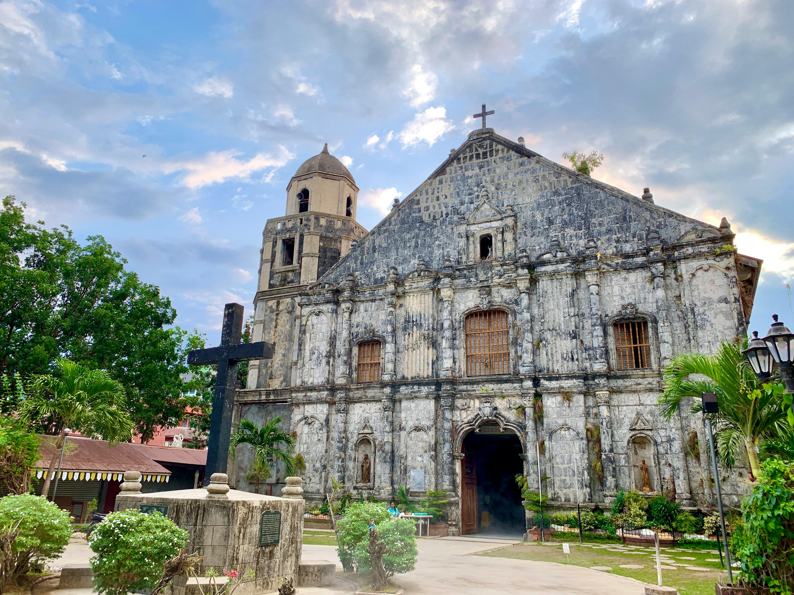
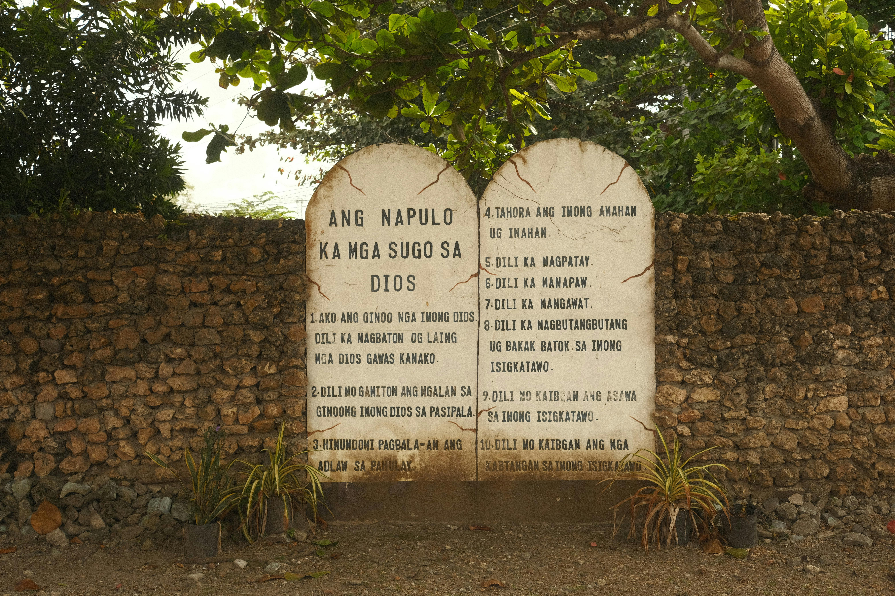
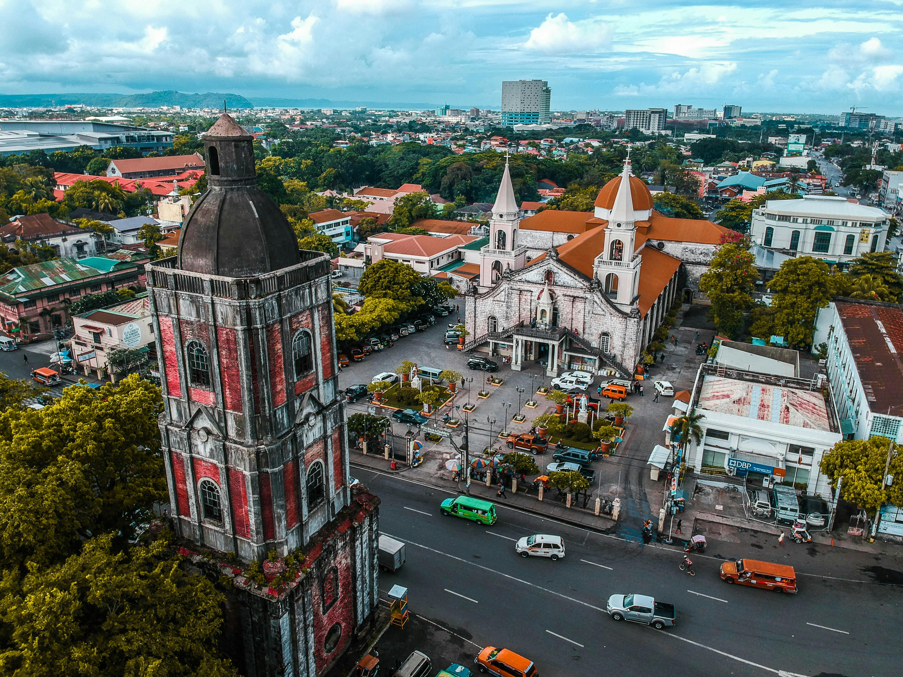

Intricate Baroque facade
A UNESCO World Heritage Site — a stunning Baroque-Romanesque church dating back to 1797, carved with local flora and saints.
Start ExploringMiagao Church, also known as the Church of Santo Tomas de Villanueva, is a UNESCO World Heritage Site famous for its unique Baroque architecture and intricate facade blending Spanish and Filipino influences. It stands as a symbol of Iloilo's rich colonial history.


Intricate Baroque facade

Massive coral stone structure

Historic bell towers

Church interiors and altar

Dress modestly
Visit early to avoid crowds
Respect religious practices
Travel to Miagao and explore the church
Walk around the town and visit local spots
Enjoy local delicacies before returning
Crystal waters, white sands, and island adventures, your perfect tropical escape in Iloilo.
Learn more


Savor Iloilo's iconic flavors, from hearty soups to grilled favorites and fresh seafood delights.
Learn more


Walk through Iloilo's past with timeless churches, landmarks, and heritage streets.
Learn more